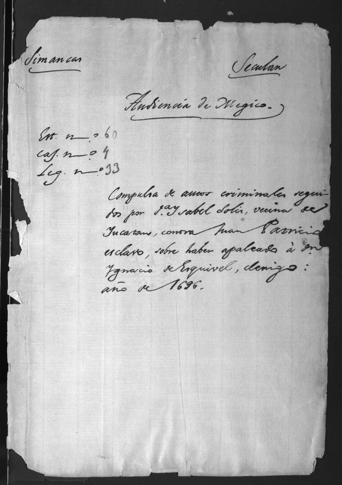

Juan Patricio
Yucatán Peninsula · 1690s
Dispossession in the Yucatán Peninsula
The surviving legal record follows Juan Patricio, an enslaved Afro-Yucatecan man, through a conflict involving his enslaver, Don Ignacio de Esquivel; Doña Isabel Solís; and Fabiana Pech, a Maya woman whose criticism of Solís he defended. Juan Patricio’s story demonstrates how possession and dispossession were, and continue to be, apprehended and lived. It unsettles the values we often assign to possession and dispossession, including the values we assign to struggles against dispossession.
In fact, the dispossessed did not always challenge their dispossession by claiming prior possession of their bodies, their lands, or their labor, or by demanding renewed possession as a singular remedy. In many cases, the dispossessed placed a much higher value on shaping and maintaining their social relations, both with other dispossessed people and with the dispossessors they confronted daily, than on gaining or regaining possessions such as land, labor, or even their own bodies.
“Throughout the legajo [case record], Juan Patricio shows himself to be much less interested in gaining or regaining any possessions than he is in animating the social relations he has with Black and Indigenous people, as well as both Spaniards and Creoles.”
—David Kazanjian, “Ante-Possession: A History of Dispossession’s Present.”
The case shows how different communities understood possession, often living beyond its terms. Although set in the 1690s, it still has much to teach us about how people continue to challenge dispossession. Understanding Juan Patricio’s actions first requires understanding the particular social world in which he lived.

Figure 3.1. Cover of the Juan Patricio proceedings. Cover page of a certified copy (compulsa) of the criminal proceedings against Juan Patricio. The title identifies the principal parties: Doña Isabel Solís, Juan Patricio, and Don Ignacio de Esquivel. Archivo General de Indias, Audiencia de México, Encuadernado 60, Caja 4, Legajo 33. Digital image from the project research files.
Slavery and Society in the Yucatán Peninsula
When many people think about slavery, they picture the plantation economies of the Caribbean, Brazil, or the American Colonies. These were slave societies, societies whose economies depended heavily on enslaved labor, particularly on large plantations. Colonial Yucatán functioned differently. While slavery was undeniably present and remained a significant part of colonial life, the peninsula can be understood as what historian Matthew Restall calls a society with slaves rather than a slave society. In other words, slavery existed throughout the region, but it was not the foundation of the peninsula’s economy in the same way it was in plantation colonies.
“Certainly, Africans were ‘involuntary colonists,’ but they did not come to Yucatan by accident. The questions prompted here are thus demographic and socioeconomic: When did Africans come to Yucatan? How many came? Where in the peninsula did they go? What roles did they play in the formation of the Spanish colony? The answers center initially on slavery...”
—Matthew Restall, The Black Middle: Africans, Mayas, and Spaniards in Colonial Yucatán
Because seventeenth-century Yucatán lacked the large-scale plantation system found elsewhere in the Americas, enslaved Africans performed a much wider variety of occupations. Rather than being concentrated in plantation labor, Afro-Yucatecans worked as ranchers, guards, artisans, domestic servants, transport workers, and in many other roles throughout colonial society. These different occupations did not diminish the violence of enslavement: Afro-Yucatecans were still brought to the peninsula against their will. Restall therefore refers to them as “involuntary colonists”, emphasizing that their presence in Yucatán was a direct consequence of Spanish imperial expansion and the Atlantic slave trade.
Involuntary Colonists
Matthew Restall’s term for enslaved Africans in colonial Yucatán. It recognizes that Africans played an important role in building and shaping colonial society while emphasizing that they were brought to the region against their will.
The diversity of these occupations meant that Afro-Yucatecans were not isolated from the rest of colonial society. Instead, they regularly interacted with both Spaniards and Yucatec Maya in their daily lives, creating a social world that was far more interconnected than many modern understandings of colonial slavery might suggest. Mixed marriages between Africans, Maya, and other racial groups occurred throughout the region, reflecting the frequent social, economic, and religious interactions that characterized everyday life. These relationships complicated the racial boundaries colonial authorities sought to impose and produced a society in which different communities continually negotiated their relations to one another.
“However, I try to demonstrate that despite being victimized by slavery, subordination, and the prejudices of both Spaniards and Mayas, Afro-Yucatecans still found ample space in this middle ground to build complex and varied lives to pursue careers, seek opportunities, raise families, and often push against and even transcend the social and economic restrictions that they inherited.”
—Matthew Restall, The Black Middle: Africans, Mayas, and Spaniards in Colonial Yucatán
At the same time, these interactions unfolded within a colonial system built upon unequal power relations. This interconnected social landscape provides important context for Juan Patricio’s story, revealing that questions of labor, race, status, and possession unfolded within a colonial society whose social boundaries were constantly being negotiated. His relationship with Fabiana Pech can only be understood within this interconnected but unequal world, not outside it.
Figure 3.2. Historical and contemporary Yucatán. Move the divider to compare transportation routes and settlements around Mérida across two cartographic views. Historical layer: detail from Antonio Espinosa, Mapa de la península de Yucatán (México), comprendiendo los Estados de Yucatán y Campeche y el Territorio de Quintana Roo, ca. 1910. Modern layer: Google Maps satellite imagery and map data, accessed August 2026.
The Language of the Yucatán
As the previous section demonstrates, colonial Yucatán was a deeply interconnected society. These connections, however, were not simply the product of everyday interaction. They were actively cultivated through decades of colonial efforts to bridge the linguistic divide between Spaniards and the Maya. Spanish colonizers sought to bring Maya communities under the authority of the Spanish Crown and Catholic Church through incorporation rather than removal. This process of incorporation was often called reducción in Spanish, meaning the re-ordering of social relations, language, and physical space.
“The reducción was the centerpiece of early missionary practice. I want to underscore that the term designates a bringing to order, and that it had three quite distinct objects: built space, everyday social practice, and language. Each of these three implied a different kind of intervention, but all were guided by the same telos: the conversion of the indios into Christians, living in policía cristiana, and speaking a language apt as a medium of Catholic practice.”
—William F. Hanks, Converting Words: Maya in the Age of the Cross
To successfully convert the Maya to Christianity, missionaries recognized that they first needed a shared means of communication. Rather than immediately forcing Indigenous communities to adopt Spanish, missionaries devoted themselves to learning Maya. They produced dictionaries, Bibles, and other religious texts that allowed Christian teachings to be communicated in Maya. Individuals who could move between the two languages were known as lenguas.
Lenguas
Bilingual translators and interpreters who facilitated communication among Spaniards and Maya. Their linguistic knowledge made them highly valued and important intermediaries in religious, legal, and governmental settings.
However, the Spanish did not simply learn Maya; they also reshaped it. Christian concepts often had no direct equivalent in Maya, requiring missionaries to redefine existing words, introduce new meanings, and adapt the language to suit the religious and colonial needs of the Spanish. Language reflects how a society understands the world around it, but it also shapes that world. By reshaping Maya to express Spanish religious and political ideas, missionaries did more than translate Christianity; they transformed one of the primary ways Maya communities understood religion, authority, and colonial society.
“Missionary grammars, manuals, and dictionaries occupy a gray zone of ambiguity, at once descriptive and prescriptive, analytic and regulatory. Analysis and translation were actually forms of reducción in the strong sense of systematically re-forming their object.”
—William F. Hanks, Converting Words: Maya in the Age of the Cross
Language, however, was not simply imposed by Spaniards on Maya. While missionaries reshaped Maya to communicate Christian doctrine and colonial authority, generations of interaction among Spaniards, Maya, and Afro-Yucatecans also left their mark on the Spanish spoken throughout the peninsula. Colonial Yucatán developed not only as a shared social space but also as a shared linguistic one, reflecting the interconnected world in which Juan Patricio lived. Understanding this linguistic landscape helps explain both how individuals from different communities built relationships and how those relationships entered the archive. The legal proceedings that survive today were translated, interpreted, and recorded through Spanish colonial institutions, reminding us that the history we know has already been filtered through the language and institutions of colonial society.
Implications
“Juan Patricio’s validation of Pech’s critique of Solís in his confrontation with the priest’s deputies made her his valido, his trusted one; similarly, we might say that her appeal to him made him her valido, or her trusted one. What is more, Juan Patricio’s anger (se enfureció) at the deputies’ disregard for Pech’s critique of Solís effectively elevates his connection to her over all else.”
Valido (Spanish): a trusted one or confidant; someone to whom another turns for protection or assistance.
—David Kazanjian, “Ante-Possession: A History of Dispossession’s Present.”
Thus, Juan Patricio’s challenge to dispossession is ante-possessive, in that it is at once before, against, and apposite to possession itself. Before possession, because he lived in a world not yet fully organized by racial capitalism; against possession, because he opposed Esquivel’s attempt to possess Fabiana Pech and himself; and apposite to possession, because he continued to shape relations among Afro-Yucatecans, Maya, and Creoles even while colonial accumulation remained powerful.
Racial Capitalism
Racial capitalism is a system in which economic profit and racial hierarchy reinforce one another. In colonial Yucatán, slavery and Indigenous tribute relied on racial difference to organize labor, property, and political authority.
More than three centuries later, Juan Patricio’s case helps us recognize accumulation by dispossession as an ongoing process in the Americas.
Key Terms
Juan Patricio
Hover or focus for a definition.